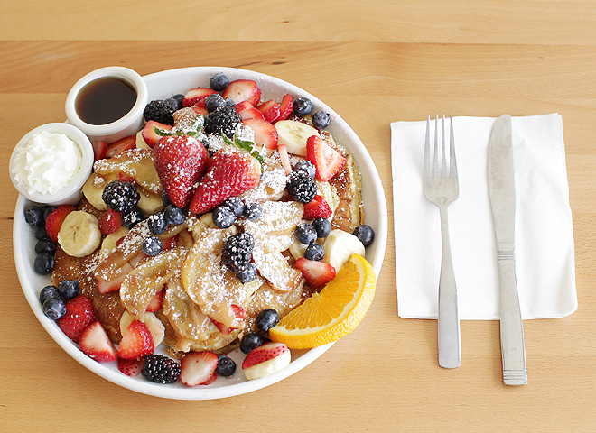

Cafe Kaila
Breakfast, Lunch, & Espresso
About
I would like to share with you some of my favorite things to eat.This menu was created because I have a passion for cooking and I especially love to eat breakfast. These dishes are a collection of my best recipes that I often make for family and friends.I am proud of the fact that we serve fresh, wholesome food that is thoughtfully prepared and attractively presented. The secret ingredient in everything is love! I hope you enjoy your meal. Thank you for visiting! : ) Love, Kaila

Beginnings
After its nondescript opening in 2007, Café Kaila quickly became one of the most talked about breakfast cafes in the area. Word spread quickly, and within months of opening, there were lines outside the door. Since then, Café Kaila has gone from strength to strength, and in 2012 opened its second store in Tokyo, Japan. We stay true to our original philosophy though, and never forget those who helped us to get where we are now.
Philosophy
It always has been, and always will be the case that customers come first at Café Kaila. The quality of food (inside, outside, and of course taste), and all-round dining experience are fundamental to everyone at Café Kaila. Even at the busiest times, we do our best to make everyone’s experience as pleasant as possible, be they a local or a tourist, waiting to come in or paying the check.
Contact
Phone: (808) 732-3330
Hours:
- 7AM-6PM on Mon-Fri
- 7AM-3PM on Sat-Sun
Address
Market City Shopping Center2919 Kapiolani Blvd
Honolulu, Oahu, HI 96826